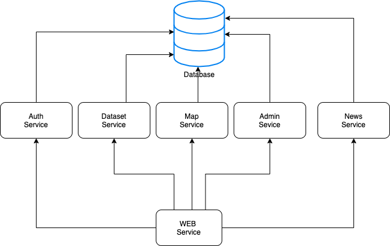
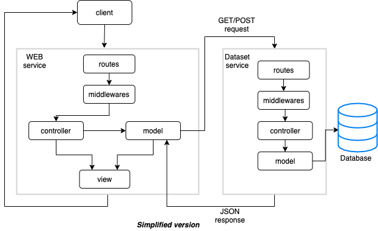
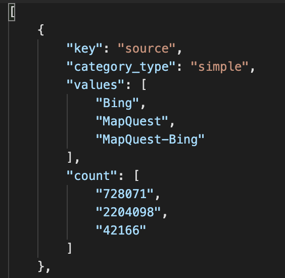
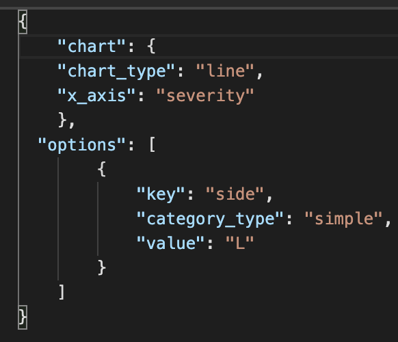
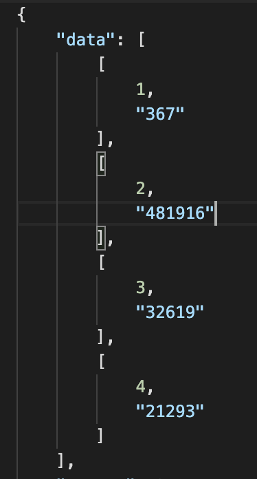

AVi (US Accidents Smart Visualizer) este o unealta de vizualizare a accidentelor din Statele Unite. Acest document prezinta functionalitatile si detaliile dezvoltarii proiectului.
AVi pune la dispozitie statistici si vizualizari prin tabele, grafice si harti. Toate acestea sunt generate flexibil, in functie de criteriile alese. De asemenea, pot fi si descarcate in format CSV, PNG si SVG.
Site-ul se foloseste de un dataset ce este pus la dispozitie pe kaggle. Unealta noastra faciliteaza urcarea acestui dataset intr-o baza de date (PostgreSQL) pentru a putea fi accesat de catre serviciile dezvoltate.
Proiectul abordeaza o arhitectura de tip MVC pe servicii cu API REST. Structura generala a proiectului:
Dupa cum putem observa, serviciile noastre sunt:
Comunicarea intre servicii arata in felul urmator:
Fiecare serviciu are urmatoarele componente:
Serviciul Web, ce faciliteaza servirea in mod direct a clientului va contine in plus componentele views si public.
Configs va contine 2 fisiere cu constante de configurari, unul de development si unul de productie.
Controllerele vor fi cele care comunica cu functiile din model si trimit raspunsul inapoi clientului in format JSON sau de pagina html(valabil doar pentru serviciul Web).
In middlewares vom gasi functii ce vor fi plasate pe anumite rute pentru a face verificari, prelucrari ale requestului/raspunsului pana la ajungerea acestora in controller. De exemplu, vom avea middlewares ce parseaza in JSON body-ul requesturilor, seteaza Headere sau verifica daca clientul este autentificat si transmite mai departe identitatea sa.
In model este facuta comunicarea cu baza de date si diverse procesari de date.
De mentionat ca serviciul Web, in model, comunica cu celelalte servicii prin request-uri http. Deci, nu comunica in mod direct cu baza de date.
In routes va fi decisa structura path-urilor din site, unde si ce middlewares vor fi apelate si ce controller apartine fiecarei rute in parte.
Utils va contine functionalitati precum randarea paginilor templetizate de catre noi, crearea, extragerea si decodarea token-urilor de autentificare.
Este specific serviciului Web si contine view-urile ce vor fi servite clinetului.
Tot specific serviciului Web, va avea in componenta toate fisiere ce sunt accesibile in mod direct si public catre client. Printre acestea se numara: fisiere css, imagini, javascript specific front-end.
Urmeaza sa dezvoltam functionalitatile fiecarui serviciu in parte.
Are rolul de a interactiona in mod direct cu clientul. Acesta va servi toate paginile catre client si va servi si ca un intermediator al apelurilor API catre alte servicii. Astfel, vom avea prezente rute pentru view-uri si pentru api. Aici vom dezvolta mai mult interactiunea clientului cu paginile (API-ul din acest serviciu este doar un man-in-the-middle pentru celelalte servicii).
Rute API(catre un anumit serviciu):
Rute pentru View-uri:
Folosim un template engine pentru a face render view-urilor. Am ales aceasta abordare pentru a evita rescrierea de cod si pentru a avea sabloane ce pot fi folosite in pagini diferite. Engine-ul folosit este EJS (Embedded JavaScript). Folosim cod HTML5 si JavaScript.
Vor fi compuse din formuri de login/register. Pentru register sunt necesare un username, o parola si un email valid. pentru login vor fi necesare username-ul si parola.
Pe aceasta pagina vor fi descrise toate coloanele (sinon. categorie, camp) ce definesc un accident.
Aici putem vedea statistici customizate sub forma de chart-uri (line, bar, pie, calendar, map). In partea stanga(2/10 din latime) avem o zona in care ne putem alege multiplele criterii, iar in partea dreapta putem vizualiza statistica in forma de chart. Tot aici putem alege exportul datelor si resetarea criteriilor alese.
Pentru graficele Line si Bar avem posibilitatea de a vizualiza mai multe statistici in acelasi grafic. Practic, ne alegem o axa comuna(X) iar apoi ne putem defini mai multe functii pe care sa le customizam separat.
Pentru graficul Calendar avem aleasa axa X implicit ca fiind o zi din an. Axa Y o putem customiza fara constrangeri.
Pentru graficul Pie putem alege o axa X, iar axa Y o putem personaliza fara constrangeri.
Map are ca axa X cele 50 de state, iar axa Y, ca la toate celelalte grafice, poate fi aleasa intr-un mod mai profund.
Pe aceasta pagina putem vizualiza toate detaliile unui anumit accident dat dupa un id (Ex: /accident?id=A-1).
Ne afiseaza sub forma de tabel accidente dupa anumite criterii alese de catre client. La fiecare schimbare de criterii, tabelul este reimprospatat. Zona alegerilor criteriilor este aceeasi cu cea de pe pagina cu statisticile.
Pe aceasta pagina puteti gasi autorii proiectului, documentatia si repository-ul de GitHub.
Dupa cum am mentionat mai sus, API-ul dezvoltat la acest serviciu reprezinta doar o madalitate de a trimite request-ul catre serviciile ce vor face 'heavy-lifting'. Aceasta abordare ne ajuta in cazurile in care dorim sa facem apeluri AJAX din front-end (evitam probleme referitoare la CORS).
In acest serviciu ne ocupam de lucrul cu dataset-ul de accidente. Avem functionalitati precum generarea dinamica de categorii multi-criteriale, generarea de statistici in functie de aceste criterii, extragerea de accidente in format bulk sau singular. Aceasta 'generare dinamica de categorii' a fost realizata prin impartirea lor in 4 categorii logice: categorii simple(ce pot fi alese printr-un checkbox, ex. alegerea unui timezone), categorii interval(ce pot fi definite prin darea unui interval, ex. 10-20 precipitatii, un interval calendaristic), categorii dropdown (utilizatorul scrie un inceput al inputului, iar noi ii sugeram variante valide, ex. inceputul numelui unui oras) si categorii explicite (pentru informatii ce ar trebui sa fie exacte, precum id-ul unui accident: A-10).
Se pot face apeluri la urmatoarele rute:
GET la '/'
Vom primi ca raspuns un array cu obiecte ce vor contine categoriile ce urmeaza a fi incarcate
in paginile cu statistici/tabele. In acest mod facilitam o generare dinamica a field-urilor
ce se regasesc in cautarea multi-criteriala.

GET la '/categories/suggestion?category=CHOSEN_CATEGORY&input=PREFIX'
Vom primi ca raspuns un array de maxim 50 de elemente ce vor contine sugestii pentru
un anumit camp.
De exemplu, daca facem apelul la: '/categories/suggestion?category=city&input=can'
vom primi ['Cana','Canaan',...,'Canyonville'].
POST la '/data_queries'
Vom trimite ca body un JSON ce va transmite serverului ce tip de statistica dorim sa primim
inapoi. Obiectul va contine 2 field-uri principale "chart"(ce va contine la randul sau
informatii precum tipul chart-ului, axa X aleasa,etc.) si "options"( un array cu optiunile alese
pentru axa Y; o astfel de optiune contine key, category_type, value).
Raspunsul va fi format din statistica ceruta: valori distincte ale axei X si numarul de aparitii
dupa ce au fost filtrate de criteriile oferite in field-ul options din request.
Request:

Response:

GET la '/accident?id=ACC_ID'
Vom primi ca raspuns un obiect cu detalii legate de un accident specific (48 de campuri).